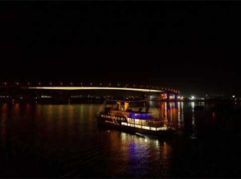
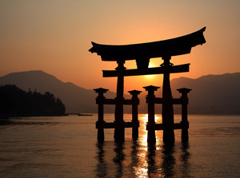
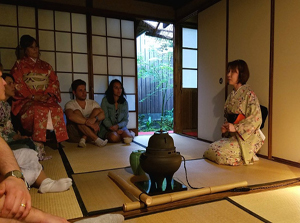
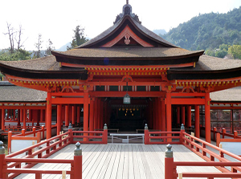
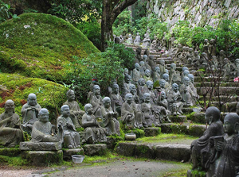
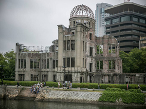

Las mejores salidas y actividades
Que hacer en Miyashima
En Miyashima, hay diversas actividades que se pueden realizar entre las mas importantes les destacamos las 6 siguientes.|
Crucero por la Bahia
Los viajes comienzan al rededor de las 19 horas, la navegacion tiene una duracion de 3 hora y la entrada al mismo incluye una cena show.
Atarceder Inolvidable
El atardecer bajo el Torii del santuario, son unas de las postales mas reconocidas de todo Japon, coordina con nosotros las salidas al santuario.
Ceremonia del Te
La ceremonia comienza una vez se llega al santuario, luego de la ceremonia se disfruta la comida kaiseki.
Visita al Santuario
Las salidas comienzan a primera hora de la mañana, las visitas tienen una duracion de 4 horas. Dispondran de un guia español para realizar el recorrido y no perdese un detalle.
Montaña Santuario
El trekking de la montaña santuario tiene un nivel medio de dificultad una subida de aproximadamente 4 horas, donde podran ver las estatuillas de los sacordotes que custodiaban la montaña en tiempos ancestrales.
City tour Hiroshima
En el City Tour a Hiroshima, visitamos el monumento de la paz "La Cupula de Genbaku" edificio iconico por quedar en pie luego del impacto de la bomba nuclear.